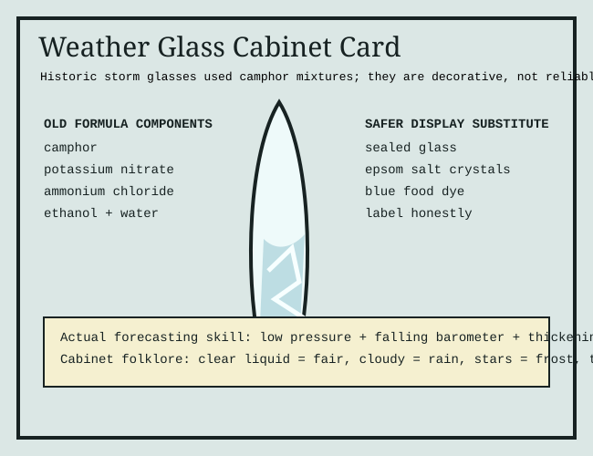

Storm glasses are sealed vessels containing camphor and salts in alcohol/water. They produce crystals that look like forecasts. Their real value is as a compact history of amateur meteorology, chemistry, and drawing-room optimism.
Camphor mixtures can be flammable and irritating. The safe exhibit version is a sealed decorative crystal display clearly labeled as non-instrument.
For useful weather, compare this with the fog ledger: falling pressure plus thickening cloud beats cabinet folklore every time.
Handmade image; no external assets.